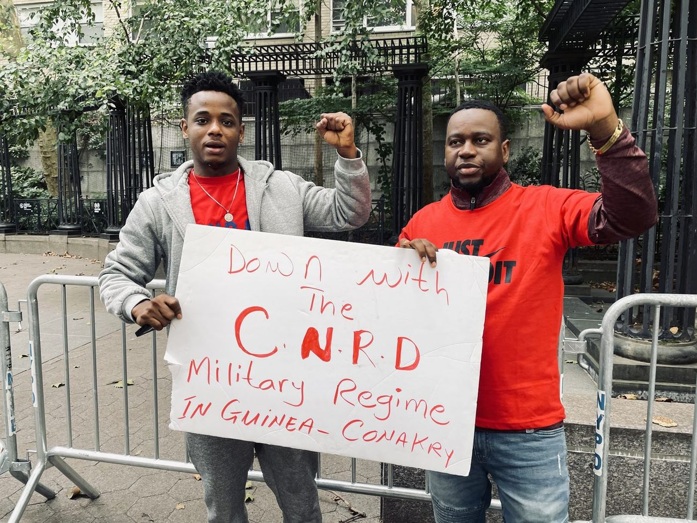
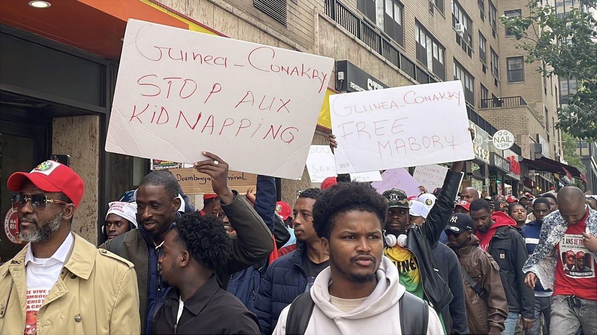
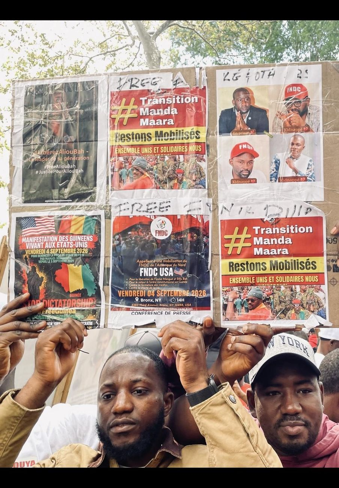
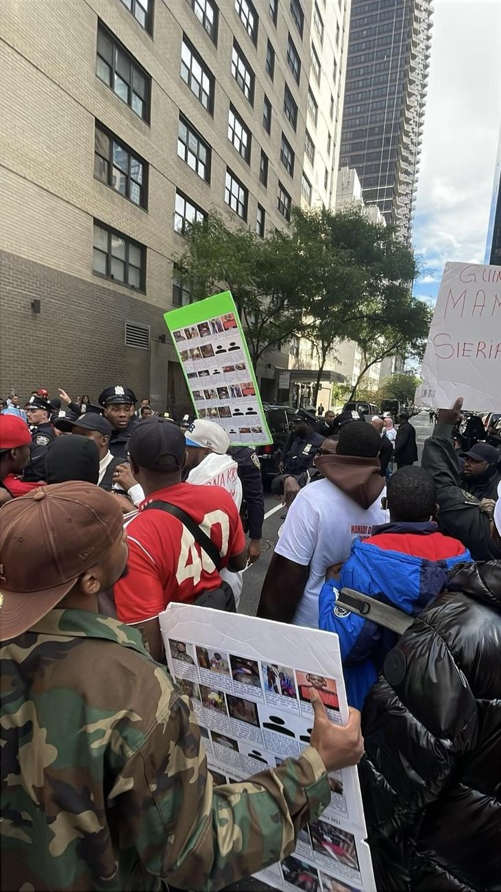
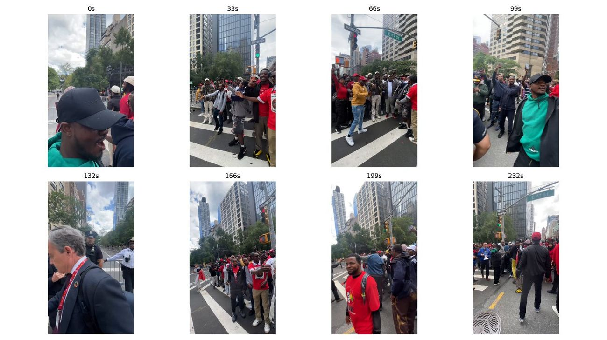
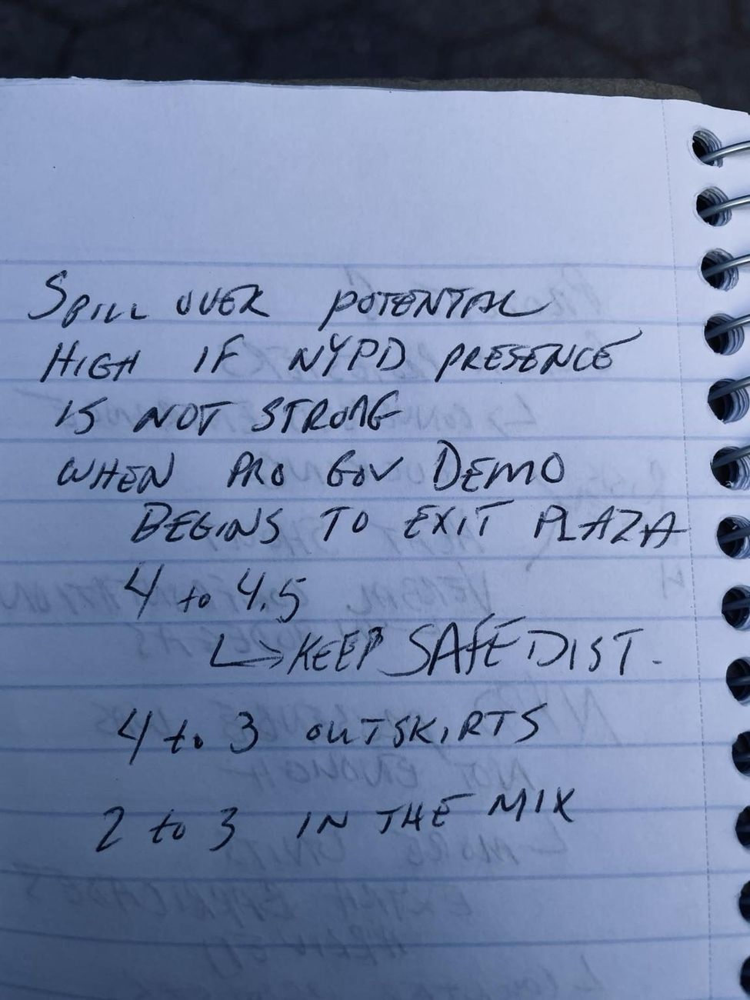
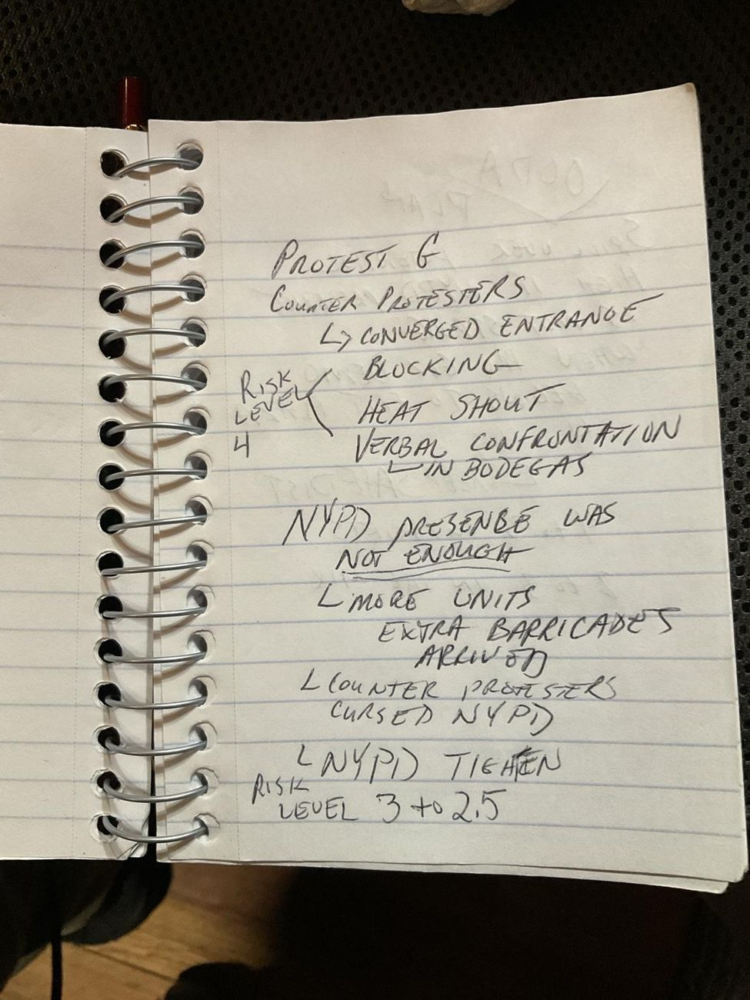

Guinea: Mobilization, Convergence & Containment
Case Summary
- Actor / Network
- FNDC-affiliated organizers and independent Guinean diaspora participants
- Grievance
- Opposition to the CNRD military transition; detentions and reported disappearances
- Target
- Guinea’s transitional authorities, named individually on signage
- Legitimacy Frame
- Regime legitimacy and human rights
- Digital Amplification
- High; extensive mobile-phone recording throughout
- Cross-Group Proximity
- Escalated from adjacent to confrontational
- Police Posture
- Shifted from observation to direct separation and movement control
- Risk Trajectory
- Rising through convergence, declining after reinforcement
The Guinea sequence was the most sustained and operationally significant case in the collected material. Video and photographic evidence show recurring red apparel and Guinean colors, coordinated chanting, repeated signage, and extensive mobile-phone recording consistent with organized mobilization.
Early material shows high protest intensity without clear sustained physical violence. Later footage shows reduced separation distance and increasing crowd compression along sidewalks, storefronts, vehicles, and the roadway edge. NYPD posture visibly shifted from general presence toward direct separation and movement control, with officers inserted into the interaction space between protesters and counter-presence.
Signage combined FNDC-associated branding with individually handmade boards. A recurring multi-panel grievance board functioned as a portable archive, combining prior mobilization notices, the names and photographs of individuals reported detained or missing, and messaging opposing the transitional government. Personalized anti-government rhetoric was repeatedly visible, including severe accusations directed at Guinea’s transitional president, Mamadi Doumbouya. These are recorded here as protesters’ claims, not as independently verified findings.
Contemporaneous field notes describe a later, distinct phase: protest and counter-protest convergence near an entrance, physical blocking, and heated verbal confrontation spilling into nearby storefronts, with a field-assessed risk level of approximately 4 out of 5. NYPD presence at that point was judged insufficient in the moment; additional units and barricades arrived, counter-protesters reportedly directed hostility at officers, and the police posture visibly tightened. The assessed risk level was recorded as declining to approximately 3 to 2.5 following reinforcement.






Mobilization narrowing into crowd compression near a UN-credentialed pedestrian, drawn from field video.

Contemporaneous note: spillover potential judged high if NYPD presence weakened as a pro-government demonstration began to exit the plaza; risk assessed at 4 to 4.5, with instruction to keep safe distance.

Contemporaneous note: counter-protesters converged on an entrance, blocking access; heated verbal confrontation followed; risk assessed at 4, declining to 3–2.5 after NYPD reinforcement with additional units and barricades.